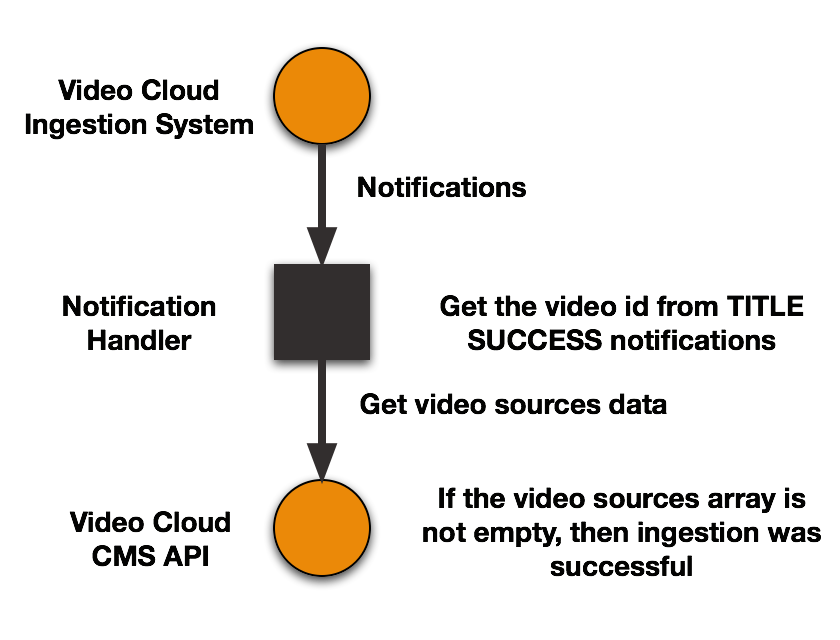

Get Status of Dynamic Ingest Requests
When you use the Dynamic Ingest API to add videos to your Video Cloud account, what you most want to know is when the video has been processed and whether or not renditions were successfully created. This document explains how you can do that using Dynamic Ingest API notifications and the CMS API. We also provide a sample dashboard app that automates the process.
Getting the data
There are two sources of data you need to determine when an ingestion job is complete and whether or not it succeeded. This diagram summarizes the workflow:

- Dynamic Ingest Notification Service
-
The Dynamic Ingest notification service sends you notifications for several kinds of events. The one that is useful in this context is a notification sent when processing of a video is complete. The notification looks like this:
{ "entity": "4375977109001", "entityType": "TITLE", "status": "SUCCESS", "version": "1", "action": "CREATE" }A notification of this type, where:
entityTypeisTITLEstatusisSUCCESSactionisCREATE
means that all processing is complete for the video.
To receive notifications, you need to include a "callbacks" field in you Dynamic Ingest API requests, pointing to one or more callback addresses:
{ "master": { "url": "https://s3.amazonaws.com/bucket/mysourcevideo.mp4" }, "profile": "high-resolution", "callbacks": ["http://host1/path1”, “http://host2/path2”] } - CMS API
-
The CMS API is used to retrieve video metadata, including an array of video sources. The request looks like this:
https://cms.api.brightcove.com/v1/accounts/{account_id}/videos/{video_id}/sourcesThe response will be an array of objects. Depending on how your account is configured, these may not correspond 1:1 with renditions created - for example, if your account is set up to provide streaming over SSL connections, there will be 2 sources for each HLS rendition (1 secure, 1 unsecured). What's important, however, is that as long as the sources array is not empty, the video has some renditions, and the ingest was successuful. If there are no sources, then something went wrong - the most common issues are:
- the source video file was invalid
- the S3 URL was unreacheable
- a transcode error was encountered
Sample
An Example to create a dashboard of Dynamic Ingestion jobs
This section explains how notications and the CMS API call can be put together to build a simple dashboard for the Dynamic Ingest API. The handler for notifications parses notifications from the Dynamic Ingest API to identify processing complete notifications. It then adds the video id into an array in a JavaScript file. The dashboard itself is an HTML page that includes the array of processed video ids. It uses the ids to makes 2 requests to the CMS API to get the video metadata and the array of sources (renditions). Whether renditions exist or not shows whether the ingest succeeded or failed. You can view the dashboard here.
All the files for this app, along with instructions for setting it up for your account, are in this repository.
Here is the high-level architecture of the app:

The app parts
The handler for notifications is built in PHP - it looks for processing complete notifications and adds the video id to an array in a separate JavaScript file:
Notification handler
JavaScript file:
Dashboard
The dashboard include the JavaScript file, and uses additional JavaScript to fetch data from the CMS API and write the results into a table:
Proxy
The proxy, also built in PHP, takes the CMS API requests from the dashboard, gets an access token, and makes the API request, returning the data to the dashboard. The proxy is needed because client-side calls to the CMS-API are not allowed, as this would require exposing your client credentials:
Clear the log
This simple PHP app just restores the JavaScript file to its original state, clearing out the old video ids: